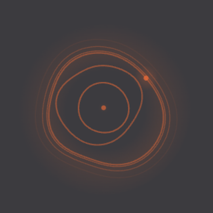

Mezzo Companion needs a different browser
The Mezzo Companion relies on Picture-in-Picture support that isn't available in this browser. Try the latest version of Chrome or Edge on desktop.

When you’re wearing headphones or talking in a shared space, it can be hard to notice when your voice gets louder.
Mezzo gives you a private visual cue if you get louder than you mean to, so you can make a small adjustment and keep participating naturally.
Mezzo uses microphone access to measure volume only. Nothing you say is recorded, transcribed, stored, or sent anywhere.
Use Mezzo during calls with headphones when other people are nearby.
Mezzo lets you know if you get louder than you mean to, without interrupting the conversation.
Mezzo measures volume on your device. It never records or transcribes what you say.
Microphone access is enabled.
Open the Companion to choose or create a speaking profile and start monitoring.
Mezzo only uses your microphone while calibrating or monitoring. Nothing you say is recorded, transcribed, stored, or sent anywhere.
Use the site controls in your browser's address bar to allow microphone access, then reload this page.
The Mezzo Companion relies on Picture-in-Picture support that isn't available in this browser. Try the latest version of Chrome or Edge on desktop.
Monitoring is not active
Keep this page open while using Mezzo.
Closing it will also close the Mezzo Companion.